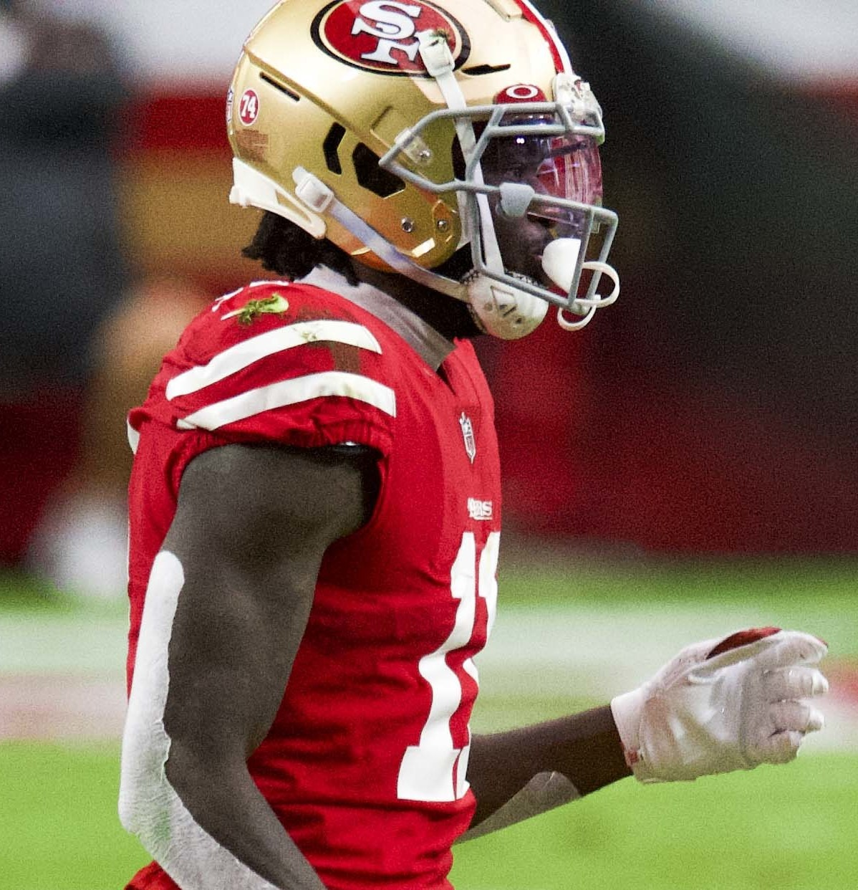

49ers · Column
Brandon Aiyuk Has Gone Full Antonio Brown, and It's Hard to Watch
Aiyuk was one of the 49ers' cleanest success stories. Since the Super Bowl loss to Kansas City, it turned into something much stranger.
Read more →San Francisco 49ers news, analysis, opinion, and Sunday storylines from Bay Area Sports Blog.

Aiyuk was one of the 49ers' cleanest success stories. Since the Super Bowl loss to Kansas City, it turned into something much stranger.
Read more →Five Super Bowls with Montana, Rice, and Young. The gold standard of a generation.
Read more →